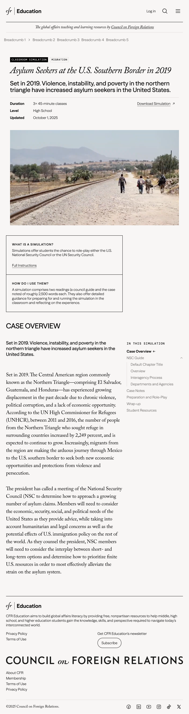

CFR Education
Project Overview
CFR Education students understand and engage with major world issues, offering over 800 free, nonpartisan lesson plans, simulations, and other classroom resources, along with training and support for the teachers that use them.
It moved onto WordPress and formally joined the CFR suite. CFR.org's design resources, including me, the PM for education and a developer tackled aligning this product with the rest of CFR.
View the live site here!
As CFR's Education site migrated from from Drupal to WordPress and formally joined the CFR suite, I brought it in line with the rest of CFR’s design system while ensuring the site still met the needs of educators.
- CFR Education ran on a different platform, with no consistent visual system and no in-house designers
- Lesson plans and simulations weren’t designed around how educators actually navigate and use them in class
- CFR.org’s existing components didn’t account for education-specific needs like grade level, time estimates, or printable PDFs
- Exposed the full table of contents by default instead of collapsing it into a dropdown
- Centered the content column instead of right-aligning it, resolving dead space
- Extended CFR.org’s topper component to surface grade level, time estimate, and a downloadable PDF
Desktop Designs


Mobile Designs


Tablet Designs


Dive Deeper
The Challenge
Navigating long, structured content
Lesson plans and simulations have multiple sections an educator needs to move between quickly. The central question was how to handle the table of contents, should it collapse into a dropdown to save space, or stay fully visible so nothing is hidden?
Layout alignment vs. legibility
Earlier designs right-aligned the content body to match CFR.org's convention. On CFR Education pages, that left the entire left side of the layout empty with dead space.
Building new components
Lesson plans and simulations needed to surface information not found on main CFR, such as grade level,time estimate for the lesson, and a downloadable PDF, which is essentially essentially a view of the full page so instructors can print it and use it in class without a screen. None of this existed in the CFR.org "topper" component.
Process & Design Work
- Table of contents: I contemplated between a collapsible dropdown and a fully exposed TOC on mobile. Since lesson plans and simulation pages tend to be short, the team agreed a dropdown added an extra step without saving meaningful space. I exposed the full TOC by default, keeping every section visible and one tap away.
- Content alignment: Moved away from CFR.org's right-aligned layout and centered it instead. On Education pages, it made the pages a bit jarring and empty. Centering fixed the dead space and made it easier to read.
- Extending the topper component. Pulled from CFR.org's existing design system components as a starting point, then built new, education-specific variants when needed. The page topper needed to surface grade level, a time estimate (e.g., "one 45-minute period"), and a downloadable, print-ready PDF version of the page for instructors.
- Platform migration. This redesign coincided with CFR Education's move from Drupal to WordPress, aligning it with the platform CFR.org had already migrated to. UX and dev worked were now aligned across both platforms.
- Visual language unified with the Council: Typography, color, and iconography were brought in line with the main CFR.org style which replaced Education's previous disconnected look with the same design language as the rest of the site.
Outcome & What’s Next
- CFR Education joined the CFR family, visually and structurally. The redesign gave CFR Education a visual identity consistent with CFR.org for the first time, and moved it onto the same platform (WordPress) as the rest of CFR's products — reflecting its new status as part of the CFR suite rather than a separate entity with its own systems.
- This was the first project to extend the design system to a new, distinct audience. I balanced reusing existing components and then adapting them specifically for Education’s needs. This also served as an early test of how flexible and scalable the system could be beyond CFR.org.
- Centered layout adopted org-wide. The centered body alignment that solved the blank page space problem on CFR Education was strong enough that it's now the default alignment for CFR.org overall.